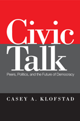

Exploring how the simple act of talking about politics and current events with friends, colleagues, and relatives causes us to become more civically active
Exploring how the simple act of talking about politics and current events with friends, colleagues, and relatives causes us to become more civically active


 Exploring how the simple act of talking about politics and current events with friends, colleagues, and relatives causes us to become more civically active
Exploring how the simple act of talking about politics and current events with friends, colleagues, and relatives causes us to become more civically active

|  |
Civic TalkPeers, Politics, and the Future of DemocracyCasey A. Klofstadpaper EAN: 978-1-43990-273-8 (ISBN: 1-4399-0273-9) |
"Klofstad�s new book is an excellent piece of scholarship on an important and enduring topic. His quasi-experimental exploration makes a significant contribution to the study of communication networks and their consequences for politics. Indeed, Civic Talk occupies a prominent place among a new wave of studies addressing the various endogeneity problems that confront studies of social influence and the formation of political communication networks."
—Robert Huckfeldt, University of California, Davis
Does talking about civic issues encourage civic participation? In his innovative book, Civic Talk, Casey Klofstad shows that our discussions about politics and current events with our friends, colleagues, and relatives—"civic talk"—has the ability to turn thought into action—from voting to volunteering in civic organizations.
Klofstad�s path breaking research is the first to find evidence of a causal relationship between the casual chatting and civic participation. He employs survey information and focus groups consisting of randomly assigned college freshman roommates to show this behavior in action. Klofstad also illustrates how civic talk varies under different circumstances and how the effects can last years into the future. Based on these findings, Klofstad contends that social context plays a central role in maintaining the strength of democracy. This conclusion cuts against the grain of previous research, which primarily focuses on individual-level determinants of civic participation, and negates social-level explanations.
Excerpt available at www.temple.edu/tempress
"In Civic Talk, Casey Klofstad leverages a unique opportunity--the random assignment of college roommates--to study the impact of political discussion on political engagement and participation. This natural experiment, coupled with a longitudinal research design, enables him to make much stronger claims about the causal impact of political discussion than previous studies. While engaging in real conversation might seem almost quaint in an era where texting, Facebook and Twitter rule, Klofstad convincingly demonstrates that ordinary talk still does matter in a digital world."
—Wendy Rahn, Professor of Political Science, University of Minnesota
"Using an innovative approach that integrates survey information and focus groups with an experimental design, Klofstad reveals that social context plays a central role in maintaining the strength of democracy. His findings also imply that efforts designed to stimulate political discourse�even if it is just casual chatting about politics�can enhance civic engagement and participation. For readers interested in thoughtful social science research with real-world implications, this book is a great choice."
— Campaigns & Elections
"[A]n excellent work that transcends political science, political communication, and political sociology.... Klofstad is to be commended for his efforts to overcome analytical biases associated with the study of civic talk, as well as for his focus on young people, whose civic life and engagement are all too often ignored by the political process due to their lack of previous participation. Summing Up: Highly recommended."
— Choice
"In his carefully constructed study of political conversations, Casey Klofstad provides compelling evidence for the impact of civic talk on the participatory habits of today�s young adults. Civic Talk is a well-documented portrait of how our social network can pull us into voluntary civic life and even get us to the polls on election day. The book fills a gap in the literature on political communication and reinvigorates the importance of peers as key socializers in political life.... Overall, this book contributes to two distinct but overlapping literatures. The detailed analysis of political conversations addresses a causal question that has stumped a field burgeoning with rich, thoughtful studies. And the emphasis on the role of peers as a socializing influence within the college environment adds a much needed element to our understanding of civic engagement in higher education. Both traditions are enhanced by Klofstad�s contribution."
— Political Communication
"[A] thoughtful review of the complex processes and mechanisms involved in increasing civic engagement....The strength of this book, then, is not in 'proving' that having a freshman roommate with whom one could talk politics does or does not 'cause' political engagement. It is found, rather, in its thoughtful discussions and detailed exploration of the ways in which private conversations spill over into a broader process of developing civic engagement�interacting with a variety of individual predispositions and, to a lesser extent, more collective experiences....While this is a book for an academic audience, it is written in an accessible manner."
—Perspectives on Politics
Preface
Acknowledgments
1. Introduction
2. Civic Talk and Civic Participation
3. Does Civic Talk Cause Civic Participation?
4. Why Does Civic Talk Cause Civic Participation?
5. Do You Matter?
6. Do Your Peers Matter?
7. The Significant and Lasting Effect of Civic Talk
8. Peers, Politics, and the Future of Democracy
APPENDIX A: The Collegiate Social Network Interaction Project (C-SNIP)
APPENDIX B: C-SNIP Panel Survey Questions and Variables
APPENDIX C: Matching Data Pre-processing
References
Index
Casey A. Klofstad is an Associate Professor of Political Science at the University of Miami.
Political Science and Public Policy
Sociology
Social Logic of Politics, edited by Scott D. McClurg.
The Social Logic of Politics Series, edited by Scott D. McClurg (formerly edited by Alan S. Zuckerman), directs attention to several related clusters of research in the social sciences. At the core is a theoretical principle: individuals make political decisions, like other choices, by taking into account cues from other persons. Studies move from individuals to groups to large scale collectivities. Usually examining micro-politics-voting and other forms of political participation; the place of politics in households, the family, the friendship unit, and the neighborhood- this research also studies how broader political and social contexts influence and are influenced by these micro-processes. It includes as well "small group behavior" in political institutions, such as exchanges of cues in legislatures and patron-client relations in bureaucratic agencies and political parties. Books in The Social Logic of Politics Series will apply research techniques that run the gamut of contemporary political science, sociology, communications, and geography.
© 2015 Temple University. All Rights Reserved. This page: http://www.temple.edu/tempress/titles/2099_reg.html.